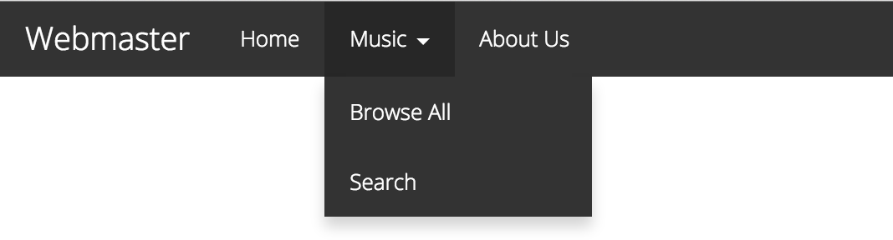
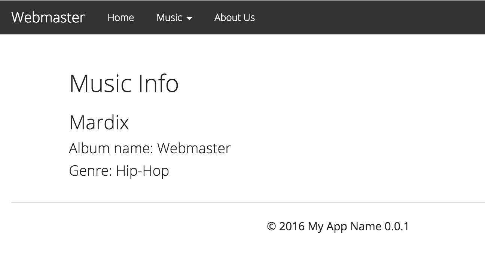

What is Webmaster ?
Webmaster is a Flask based framework with some of the most common Flask extensions to rapidly build Website, Admin section, RESTful API and more.
One of the strength of Webmaster is it automatically creates the route endpoint from the class and methods.
It also quickly allows you to create Navigation menu on the methods you are writing.
Webmaster is really convenient and will help create web applications faster.
Installation
The best way to install Webmaster is to do it with pip.
pip install webmaster
As a good practice, it is best to install it into its own virtual environment.
The installation will get all the necessary packages to get you going.
After the installation is complete, Webmaster will create webcli, a command line tool to conveniently create projects, build assets, push assets to S3, deploy application to production server and more.
On the command line run the webcli like below
webcli
Create Your First Application
To create your application, we'll use the webcli command. It will create all the necessary files to get you going.
First, cd into the directory that will contain your application,
then type the command below:
webcli create --project www
Upon creation, you should see the structure below,
where www name is the default name for web project,
but can be anything and will follow the structure below.
Please notice the file app_www.py and the directory /application/www.
/
- app_www.py
|
- manage.py
|
- propel.yml
|
- requirements.txt
|
- application/
|
- data/
|
- mailer-templates/
|
- uploads/
|
- extras/
|
- __init__.py
|
- www/
|
- static/
|
- css/
|
- images/
|
- js/
|
- assets.yml
|
- templates/
|
- Index/
|
- index.html
|
- __init__.py
|
- views.py
-
app_www.py: This is the project's entry point. It is used to launch the application. -
manage.py: Mostly a command line tool to setup the application or do anything on the command line -
requirements.txt: This file should contain all your application's dependencies to be installed -
propel.yml: A deployment configuration file. -
/application: contains all the applications -
/application/data: This directory contains application data such uploads etc. -
/application/extras: May contain customs module to be shared by all the applications -
/application/www: In this casewwwis the application name and was set when doingwebcli create --project www. This directory contains your application's static files, templates files, views, etc. -
/application/www/static: This directory contains the application's static files for thewwwapplication -
/application/www/templates: This directory contains the template files for thewwwapplication -
/application/www/views.py: That file conatains the application's View classes
Your First Launch on Local Dev
Now the application is setup we can launch the local dev server to see the site.
To run the server, type the command below:
webcli local --project www
Automatically it will launch the site and you can navigate to see the site at:
http://127.0.0.1:5000
Your First View
By default, your views file is at /application/www/views.py
You views consist of classes extended by webmaster.View. One view file can
have multiple View classes in it.
Each method in the class is automatically an action, unless it is a @classsmethod
or starts with _ underscore. And action is an endpoint to be accessed.
By default, each endpoint is built on the class and the method being called. It will be in lower case and dasherized.
Here's a sample of a views.py, which contains two View classes
from webmaster import View
from webmaster.decorators import (menu, methods)
class Index(View):
@menu("Home", order=1)
def index(self):
return {}
@menu("About Us", order=3)
def about_us(self):
return {}
@menu("Music", order=2)
class Music(View):
@menu("Browse All")
def index(self):
return {}
def get(self, id):
return {
"album_name": "Webmaster",
"artist_name": "Mardix",
"genre": "Hip-Hop"
}
@menu("Search")
def search(self):
return {}
@methods("POST")
def submit(self):
return {}
Automatic routes
Using the above example the following endpoints are available automatically. No need to create a route for each one of them.
-
Index.index-> http://domain/ -
Index.about_us-> http://domain/about-us -
Music.index-> http://domain/music -
Music.search-> http://domain/music/search -
Music.get-> http://domain/music/12345
Instant navigation menu creation
@menu allow us to create a navigation menu directly in the Class and methods.
This help with Rapid Application Development, and it uses the endpoint of the current
Class and method. Below is how it will look like using the views above.

Smart templates mapping
And lastly, notice that the methods return a dict of the data to pass to the template.
Webmaster will map the class name and the method used to the templates.
-
Index.about_us-> /templates/Index/about_us.html -
Music.search-> /templates/Music/search.html
Learn more about VIEWS
Your First Template
Templates are normal JINJA .html pages placed at application/www/templates
Each directory match a View class name in the views.py, and inside of the directory,
contains .html files matching the methods name.
-
Index.index-> /templates/Index/index.html -
Index.about_us-> /templates/Index/about_us.html -
Music.index-> /templates/Music/index.html -
Music.get-> /templates/Music/get.html -
Music.search-> /templates/Music/search.html
With views.py above, /templates/Music/get.html
<h2>Music Info</h2>
<h3>{{ artist_name }}</h3>
<h4>Album name: {{ album_name}} </h4>
<h4>Genre: {{ genre }} </h4>
Dude where's my layout?
application/www/templates/layout.html is the main layout of the site,
all pages are automatically included upon rendering.
You would not need to use {% extends %} to place a layout around the Music/get.html page.
Upon rendering, you will see a site looking like this:

Learn more about TEMPLATES
Your First Static
application/www/static contains all the static files: images, css, javascript etc.
Learn more about STATIC
Deploy to Production
Now your application is ready, it is time to deploy in production.
While there many other options, I'm more familiar with Propel and Gunicorn.
-
With Propel
propel -w -
On Gunicorn
gunicorn app_www:app
Learn more about DEPLOYMENT
That's it!
Wasn't it easy?
Decision Made for You
-
Smart routing: automatically generates routes based on the classes and methods in your views
-
Class name as the base url, ie: class UserAccount will be accessed at '/user-account'
-
Class methods (action) could be accessed: hello_world(self) becomes 'hello-world'
-
Easy rending and render decorator
-
Auto route can be edited with @route()
-
Restful: GET, POST, PUT, DELETE
-
REST API Ready
-
bcrypt is chosen as the password hasher
-
Session: Redis, AWS S3, Google Storage, SQLite, MySQL, PostgreSQL
-
ORM: Active-Alchemy (SQLALchemy wrapper)
-
ReCaptcha: Flask-Recaptcha
-
CSRF on all POST
-
Storage: Local, S3, Google Storage Flask-Cloudy
-
Mailer (SES or SMTP)
-
Caching
-
Propel for deployment
Built-in Packages
Wemaster comes with built-in packages to help you run from the get go.
-
Basic Layout
-
Admin Layout
-
Index page
-
User Auth : It allows to authenticate users into the application. Contains the following pages:
- login
- signup
- lost-password
- account-settings
-
User Admin
-
Publisher a CMS lite to manage posts (article, blog, dynamic pages, etc)
- With Admin
- With Front end view
-
Contact Page
-
Error Page (Custom error page)
-
Social Signin (in experiment)
-
Social Share
-
Bootswatch
-
Font-Awesome
-
Markdown
Front End Components
- Lazy load images
- Social Share Buttons
- JQuery
- Bootstrap
- Bootswatch
- Js-Cookie
- JQuery Lazy
- JQuery Oembed
- (aut)